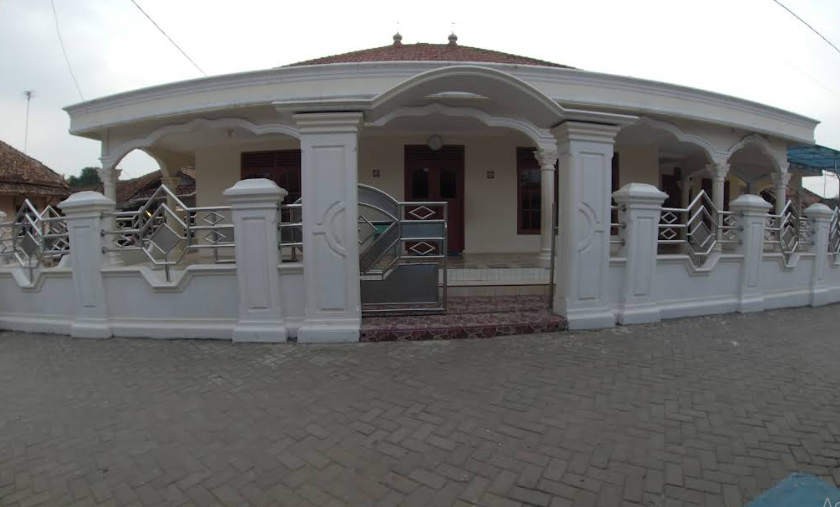

Sejarah Jalumprit
Komunitas Jalumprit berdiri pada tanggal 15 Juni 1990 dengan semangat kebersamaan yang kuat. Awalnya merupakan perkumpulan kecil warga yang peduli terhadap lingkungan sekitar.
Tahun 1995: Pembentukan struktur organisasi formal
Tahun 2000: Perluasan program sosial dan pendidikan
Tahun 2010: Pengembangan fasilitas komunitas modern

Foto dokumentasi tahun 2016